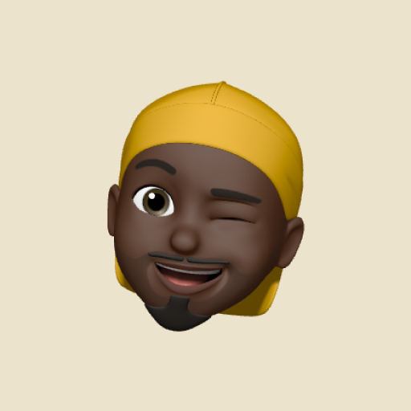
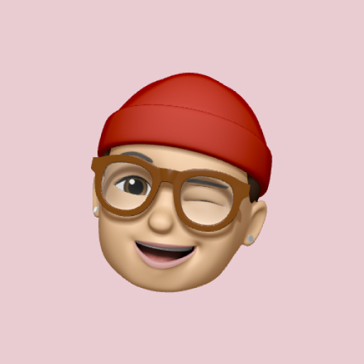

Avatars
Exported from Figma (page "• Avatar"). Seven sizes × Image / Text initials × Rounded / Squared × online status, with three initial-color themes. One --sz custom property drives each size; initials scale to 50%, the status dot to 21%.
Sizes
3xl 96 · 2xl 80 · xl 64 · lg 48 · md 40 · sm 32 · xs 24 px. Initials render at 50% of the avatar diameter (Plus Jakarta Bold).

3xlType — Image / Text
Image uses object-fit: cover. Text falls back to initials on a tinted fill — the fully themeable path (no asset needed).
Initial Colors
Grey (Main/Grey + main-text/default), Primary (background/bg-tertiary + main-text/brand), Red (System/Danger-soft + System/Danger).
Shape — Rounded / Squared
Rounded is a full circle; Squared uses border/border-radius/sm (4px).
Status — Online
Online indicator: green dot (avatar/status-online #7cc731) with a 2px surface-colored ring, anchored bottom-right. Scales to 21% of the avatar.

Y
Profile
Avatar + name label stacked (Figma "Profile"). Mixes image and initial avatars.
Stacked Group (common usage)
Overlapping avatars with a surface-colored ring and a “+N” overflow chip. A composition pattern, not a Figma variant.
Token Reference
| Token | Light | Usage |
|---|---|---|
| --avatar\/grey\/bg | Main/Grey #efefef | Grey initials background |
| --avatar\/grey\/text | main-text/default #171717 | Grey initials text |
| --avatar\/primary\/bg | bg-tertiary #e6edff | Primary initials background |
| --avatar\/primary\/text | main-text/brand #352eff | Primary initials text |
| --avatar\/red\/bg | Danger-soft #ff00001a | Red initials background |
| --avatar\/red\/text | System/Danger #ff0000 | Red initials text |
| --avatar\/status-online | #7cc731 (green/500) | Online status dot |
| --avatar\/status-ring | #ffffff | Status dot ring |
| --border\/border-radius\/sm | 4px | Squared corner radius |